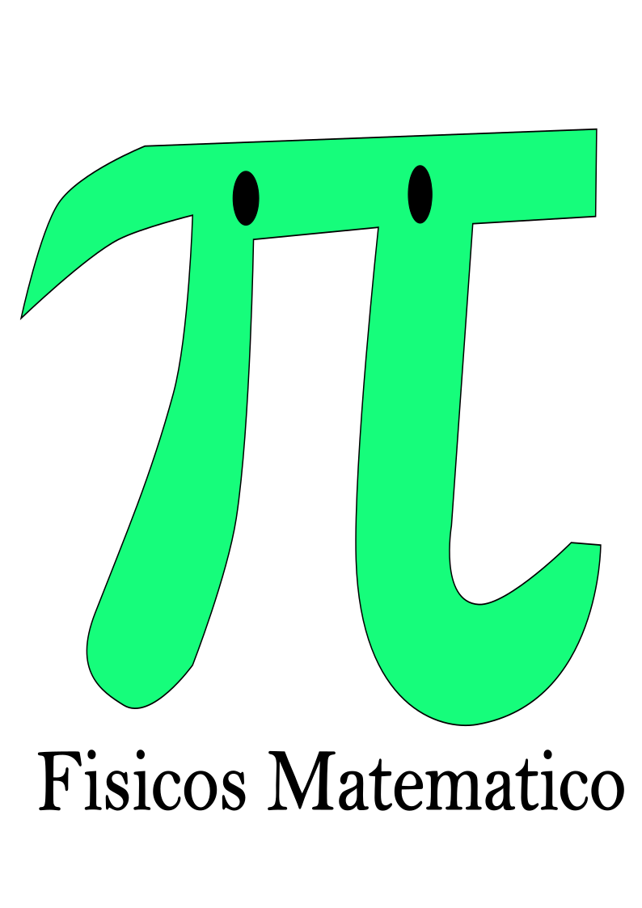
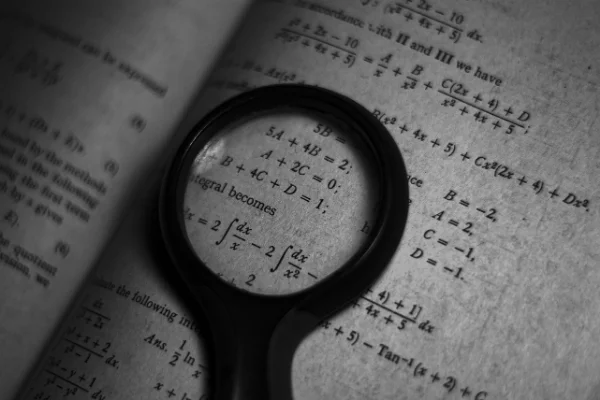

Fisicos-Matematicos
El estudiante egresado del área físico-matemático, además de cumplir con las competencias genéricas que marca el sistema nacional de bachillerato, logran adquirir las siguientes competencias disciplinares y extendidas:
- Utilizan la creatividad y el pensamiento lógico y crítico.
- Resuelve problemas prácticos mediante el uso de ecuaciones matemáticas.
- Aplica sus conocimientos de ciencias como la química, la física y las matemáticas en diversas situaciones de la vida cotidiana.
- Argumenta y estructura mejor sus ideas y razonamientos.
- Se comunica efectivamente en el español y en una segunda lengua en diversos contextos, mediante el uso de distintos medios e instrumentos
- Lee críticamente y comunica y argumenta ideas de manera efectiva y con claridad oralmente y por escrito.
- Usa las tecnologías de la información y la comunicación de manera crítica para diversos propósitos comunicativos.
- Disfruta de la ciencia y la tecnología, su estudio y análisis para el mejor aprovechamiento de los recursos naturales y sociales.
